คอมพิวเตอร์บอร์ดเดี่ยวที่รองรับการเขียนโปรแกรมด้วย Arduino#
Keywords: Single-Board Computers with Arduino Support
▷ คอมพิวเตอร์บอร์ดเดี่ยว#
คอมพิวเตอร์บอร์ดเดี่ยว (Single Board Computer: SBC) เป็นคอมพิวเตอร์ประเภทหนึ่ง มีให้เลือกใช้หลายรูปแบบซึ่งมีอยู่จำนวนมากในปัจจุบัน โดยทั่วไปแล้วคอมพิวเตอร์บอร์ดเดี่ยวมีขนาดเล็ก และใช้พลังงานน้อยกว่าระบบคอมพิวเตอร์ประเภทอื่น แต่ก็สามารถใช้งานระบบปฏิบัติการ เช่น Windows, Linux และ Android OS ได้
หากนำมาต่อพ่วงกับอุปกรณ์เช่น แป้นพิมพ์และเมาส์ ผ่านทางพอร์ต USB สำหรับส่วนการรับอินพุตจากผู้ใช้ และต่อจอแสดงผล เช่น ผ่านทาง HDMI ก็สามารถใช้งานได้เหมือน คอมพิวเตอร์ประเภท Desktop ได้เช่นกัน
เราอาจจำแนกคอมพิวเตอร์บอร์ดเดี่ยวตามสถาปัตยกรรมของชิปตัวประมวลผลบนบอร์ด ได้ดังนี้
- x86 / x86_64
- Arm Cortex-A Series
- RISC-V
- MIPS
ชิป SoC (System on Chip) ที่ได้มีการนำมาใช้เป็นตัวประมวลผลหลัก ประกอบด้วยซีพียูแบบหลายแกน (Multi-Core) ซึ่งมีสถาปัตยกรรมเดียวกันทั้งหมด (เรียกว่า Homogeneous Multi-Core Processor System) หรืออาจมีสถาปัตยกรรมที่แตกต่างกันได้ ซึ่งเรียกว่า "สถาปัตยกรรมแบบผสม" (เรียกว่า Heterogeneous Multi-Core Processor System) เช่น ชิปที่มีซีพียูแบบ Arm Cortex-A9 จำนวน 4 แกน และมีซีพียูแบบ Arm Cortex-M4 อีก 1 แกน เป็นต้น
ในกรณีนี้ Arm Cortex-A9 เป็นชิปประเภท MPU (Microprocesor Unit) และ Arm Cortex-M4 เป็นชิปประเภท MCU (Microcontroller Unit)
- MPU: ไมโครโพรเซสเซอร์ที่มีตัวประมวลผลแบบหลายแกน มีให้เลือกทั้งแบบ 32 บิต และ 64 บิต สามารถประมวลผลด้วยความเร็วสูง ใช้ความถี่มากกว่า 1 GHz ขึ้นไปได้ รองรับการใช้งานระบบปฏิบัติการ เนื่องจากมีวงจรส่วนที่เรียกว่า MMU (Memory Management Unit) และใช้งานร่วมกับชิปหน่วยความจำภายนอก เช่น ประเภท DRAM (DDR3 / DDR3L) ชิปประเภทนี้รองรับการใช้งานระบบปฏิบัติการ เช่น Linux และสามารถเขียนโปรแกรมด้วยภาษา C/C++ และภาษาอื่น เช่น Python เป็นต้น
- MCU: ไมโครคอนโทรลเลอร์ที่มีตัวประมวลผลแบบแกนเดียว ขนาด 32 บิต หรือบางกรณีก็มีสองแกน ใช้ความถี่ต่ำกว่า 500MHz มีหน่วยความจำ SRAM อยู่ภายใน และมีหน่วยความจำ Flash อยู่ภายในชิป หรืออาจอยู่ภายนอกได้
โดยทั่วไปแล้ว คอมพิวเตอร์บอร์ดเดี่ยว มักจะมีขา I/O สำหรับสัญญาณดิจิทัลมาจากชิปของตัวประมวลผลหลัก เช่น Pin Headers หรือคอนเนกเตอร์รูปแบบต่าง ๆ ซึ่งพบเห็นได้ในกรณีของบอร์ด Raspberry Pi เป็นต้น แรงดันไฟฟ้าที่ขา I/O มักอยู่ที่ระดับ 3.3V และบางกรณีก็ต่ำกว่านั้น เช่น 1.8V ดังนั้นผู้ใช้ควรศึกษาจากเอกสารผู้ผลิต ให้แน่ใจก่อนต่อวงจรใช้งาน
คอมพิวเตอร์บอร์ดเดี่ยว มีหลายตัวเลือกสำหรับการจัดเก็บข้อมูลและระบบไฟล์ของระบบปฏิบัติการ เช่น
- ช่องเสียบการ์ดหน่วยความจำ microSD
- ชิป eMMC
- คอนเนกเตอร์ M.2 socket (M.2 B-key, M-key) สำหรับ SATA SSD / NVMe SSD
ชิปตัวประมวลผลหลักอาจมีไมโครคอนโทรลเลอร์รวมอยู่ด้วย ซึ่งแบ่งเป็น 2 กรณี คือ รวมอยู่ภายในชิปเดียวกัน และแยกชิปกัน ไมโครคอนโทรลเลอร์ทำหน้าที่เป็นเสมือนตัวช่วย หรือ Coprocessor ใหักับตัวประมวลผลหลัก และเชื่อมต่อกับอุปกรณ์ภายนอกได้หลายแบบ รวมถึงการใช้สัญญาณทั้งแบบดิจิทัลและแอนะล็อกได้ และสามารถทำงานแบบ Real-Time ได้ดีกว่า (อาจมีการใช้งานร่วมกับ RTOS หรือ ระบบปฏิบัติการเวลาจริงสำหรับไมโครคอนโทรลเลอร์)
คำถาม: ตัวอย่างคอมพิวเตอร์บอร์ดเดี่ยวแบบใดบ้างที่มีไมโครคอนโทรลเลอร์รวมอยู่ด้วย และเขียนโปรแกรมด้วย Arduino ได้ด้วย?
ถัดไปลองมาดูตัวอย่างคอมพิวเตอร์บอร์ดเดี่ยวที่มีคุณสมบัติตามที่ได้กล่าวไป (SBCs with integrated Arduino)
- Arduino Yún
- Arduino Tian
- Arduino TRE
- Arduino Portenta X8
- Seeed Studio LinkIt Smart 7688 Duo
- UDOO
- LattePanda
▷ Arduino Yún#
ทีมพัฒนา Arduino ได้เปิดตัวบอร์ด Arduino Yún ในเดือนพฤษภาคม ค.ศ. 2013 (พ.ศ. 2556) ในงาน Maker Faire Bay Area (ตั้งราคาไว้ประมาณ $US 75)
Arduino Yún ถือว่าเป็นบอร์ดรุ่นแรก ๆ ที่ทาง Arduino ได้พัฒนาออกมาเป็นตัวเลือกสำหรับบอร์ดประเภท SBC ที่รองรับการใช้งาน Linux (OpenWrt-based Linino OS) โดยใช้ชิป Qualcomm Atheros AR9331 ซึ่งเป็นตัวประมวลผลประเภท MPU และมีชิป ATmega32u4 อยู่บนบอร์ดเดียวกัน ชิปทั้งสองสื่อสารกันผ่านทาง Serial/UART ดังนั้น AR9331 จึงทำหน้าที่เป็น Linux-based IoT Gateway (เชื่อมต่อ Ethernet 100Mbps หรือ WiFi 2.4GHz IEEE 802.11b/g/n) ให้กับชิปไมโครคอนโทรลเลอร์ ที่เขียนโปรแกรมด้วย Arduino Sketch
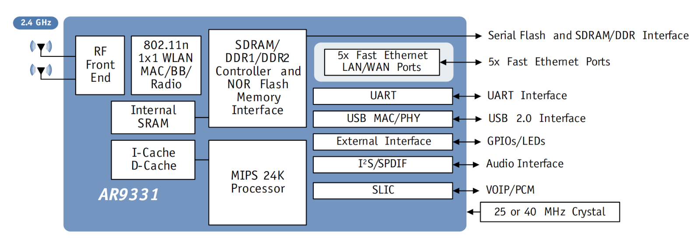
รูป: บล็อกไดอะแกรมของ Atheros AR9331 SoC
การใช้งานชิป AR9331 พบเห็นได้ในอุปกรณ์ประเภท WiFi Router และใช้งานร่วมกับระบบปฏิบัติการ OpenWrt ผู้ใช้สามารถตั้งค่าใช้งานผ่านหน้าเว็บได้ และในส่วนที่เป็นชิป ATmega32u4 ก็สามารถเขียนโปรแกรมได้เหมือน Arduino Leonardo โดยเชื่อมต่อทางพอร์ต USB ไปยังคอมพิวเตอร์ของผู้ใช้ได้
การจ่ายไฟเลี้ยงให้บอร์ด Arduino Yún มีสองตัวเลือกคือ 1) ผ่านพอร์ต MicroUSB และ 2) ผ่านขา VIN โดยใช้แรงดันไฟเลี้ยง +5Vdc
เนื่องจากบนบอร์ดมีชิปหรือวงจรที่ทำงานด้วยระดับแรงดันไฟฟ้าที่แตกต่างกัน (2.5V, 3.3V, 5V) เช่น การสื่อสารข้อมูลกันระหว่างชิป AR9331 และ ATmega32u4 จึงต้องมีการแปลงสัญญาณไฟฟ้า (Level Translation) เช่น ระดับแรงดันไฟฟ้า 2.5V-to-5V และ 5V-to-2.5V โดยใช้ไอซี NXP NTB010x และ Maxim MAX3375E เป็นต้น
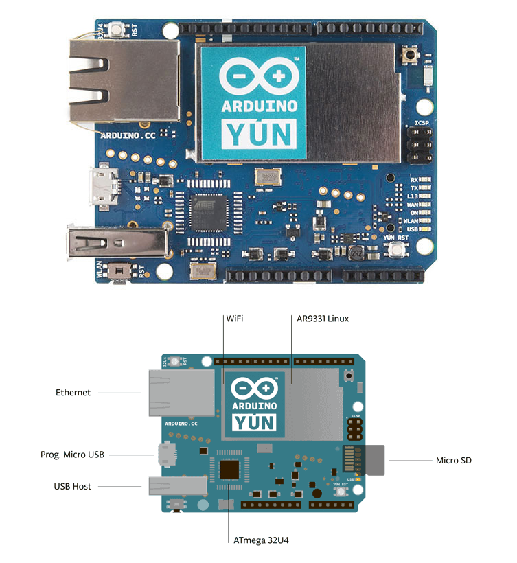
รูป: Arduino Yún (Schematic)
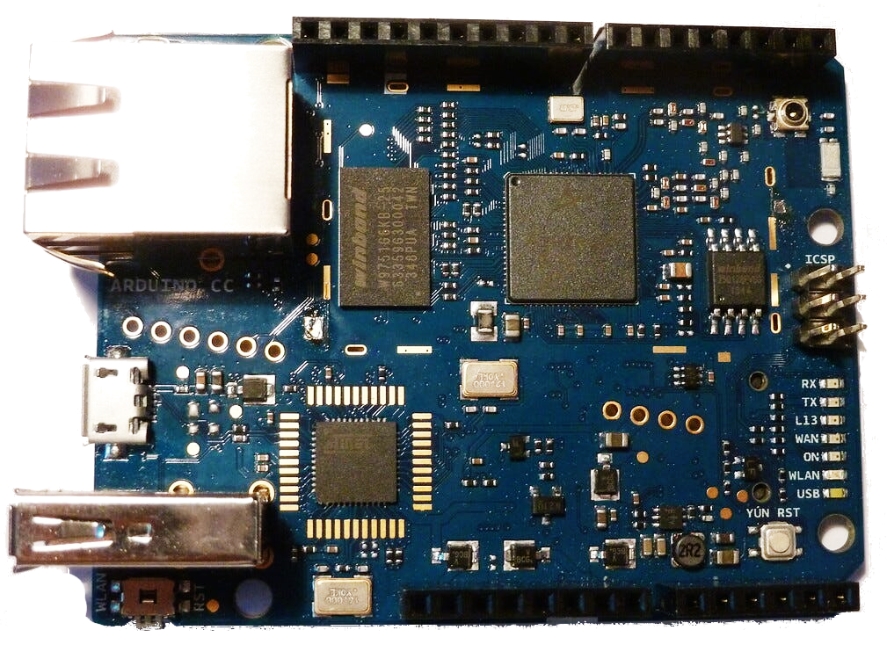
รูป: บอร์ด Arduino Yún ที่ได้มีการเปิดฝาครอบโลหะซึ่งแสดงให้เห็นชิป AR9331 ชิปหน่วยความจำ W9751G6KB (DDR2) และชิป 25Q128FVSG (SPI Flash)
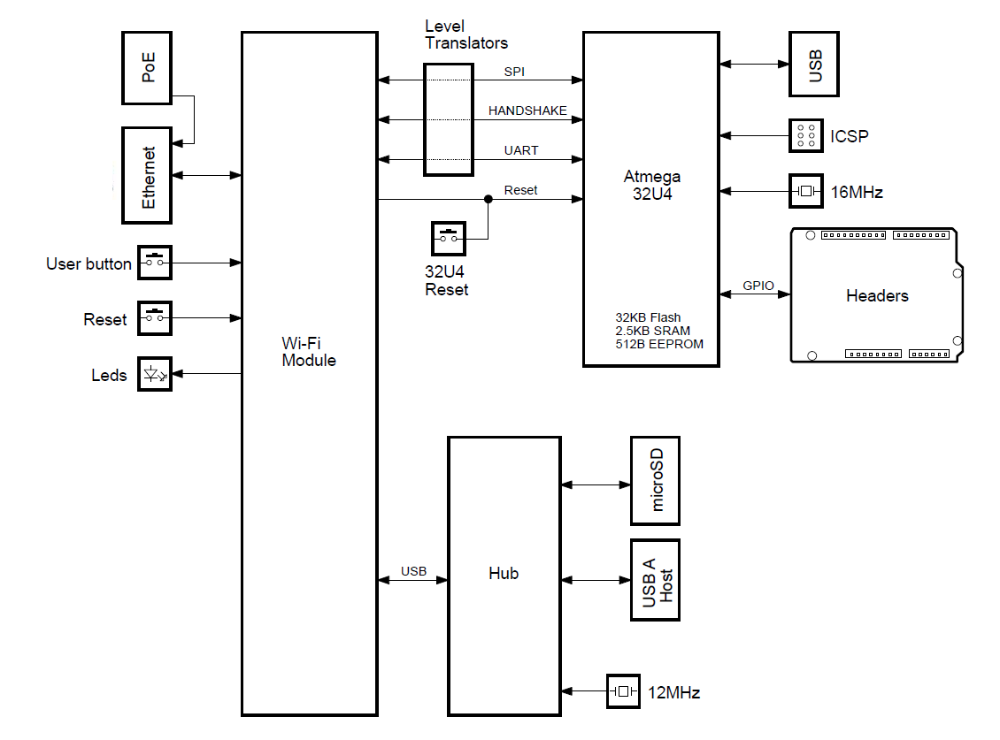
รูป: บล็อกไดอะแกรมของ Arduino Yún
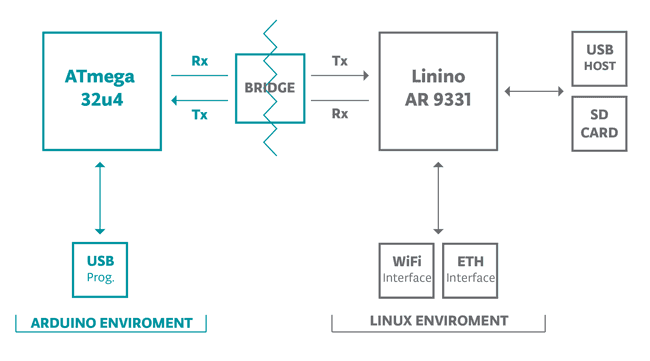
รูป: การเชื่อมต่อแบบ Serial Bridge ระหว่าง AR9331 กับ ATmega32u4
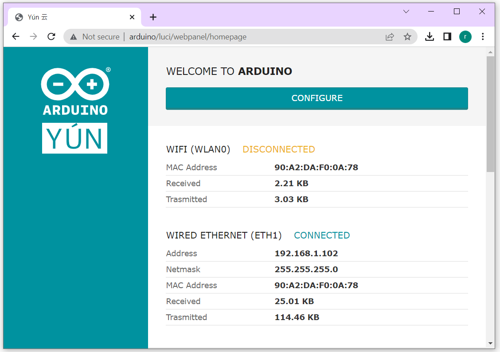
รูป: ตัวอย่างหน้าเว็บของ Arduino Yún (http://arduino.local/)
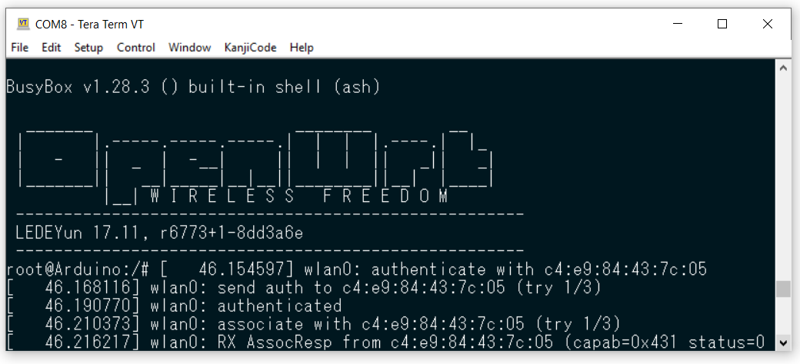
รูป: ตัวอย่างข้อความจากการทำงานของ U-Boot 1.1.5-linino หลังจากรีเซตการทำงานของบอร์ด
โดยใช้ชิป ATmega32U4 ที่ได้มีการติดตั้งเฟิร์มแวร์ YunSerialTerminal.ino
ของ Arduino Bridge Library ให้ทำหน้าที่เป็นตัวเชื่อมต่อกับ Linux Terminal ไปยังคอมพิวเตอร์ของผู้ใช้
▷ Arduino Yún Variants#
บอร์ด Arduino Yún มีหลายเวอร์ชัน แต่ในปัจจุบันบอร์ดต่าง ๆ เหล่านี้ ได้เลิกการผลิตไปแล้ว
- Arduino Yún Rev 1
- Arduino Mini
- Arduino Yun Shield
- Arduino Yún Rev 2
- Arduino Industrial 101
บอร์ด Arduino Yún มีหน่วยความจำค่อนข้างจำกัด เช่น มีชิปหน่วยความจำ DDR2 ขนาด 64MB และชิป SPI Flash ขนาด 16MB หากจะติดตั้งโปรแกรมต่าง ๆ เพิ่มสำหรับ OpenWrt ก็จะต้องเปลี่ยนมาใช้การ์ดหน่วยความจำ microSD สำหรับเก็บระบบไฟล์ของลีนุกซ์
Arduino Yún Rev 1
- Release Date: May 2013
- MPU: Qualcomm Atheros AR9331 (MIPS32 24K WiFi SoC, 3.3V, 400 MHz)
- MCU: Atmel/Microchip ATmega32u4 (5V, 16 MHz, 32KB Flash, 2.5KB SRAM), Arduino Leonardo compatible
- RAM/Flash: 64 MB (DDR2 W9751G6KB) / 16 MB (WINBOND 25Q128FVSG)
- Storage: micro SD card slot
- Connectivity: Ethernet (IEEE 802.3 10/100Mbps) & WiFi (IEEE 802.11b/g/n)
- USB: 2.0 Host
- OS: LininoOS (Linux distribution based on OpenWrt)
- Status: Retired (End-of-life)
- Doc: https://docs.arduino.cc/retired/boards/arduino-yun
Arduino Mini
- Release Date: May 2015
- Status: Retired
- Doc: https://docs.arduino.cc/retired/boards/arduino-yun-mini
Arduino Industrial 101
- Release Date: March 2015
- Status: Retired
- Doc: https://docs.arduino.cc/retired/boards/arduino-industrial-101
Arduino Yun Shield
- Release Date: May 2016
- Status: Retired
- Doc: https://docs.arduino.cc/retired/shields/genuino-yun-shield
Arduino Yún Rev 2
- Release Date: March 2018
- Status: Retired
- Doc: https://store.arduino.cc/products/arduino-yun-rev-2
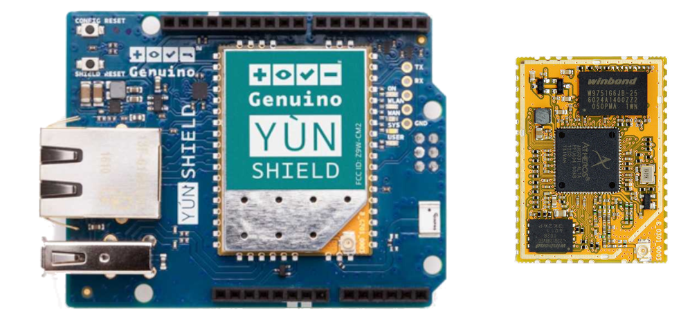
รูป: Arduino Yún Shield (ซ้าย) และโมดูล Carambola 2 WiFi (ขวา)
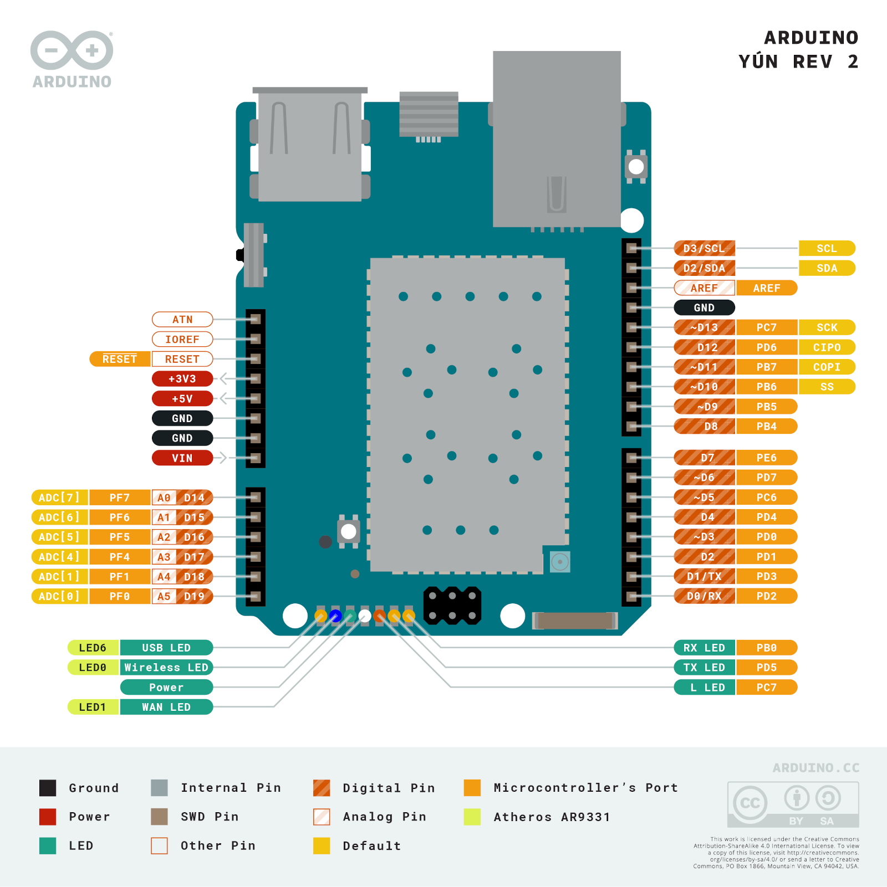
รูป: Arduino Yún Rev2 Pinout (Source: Arduino.cc)
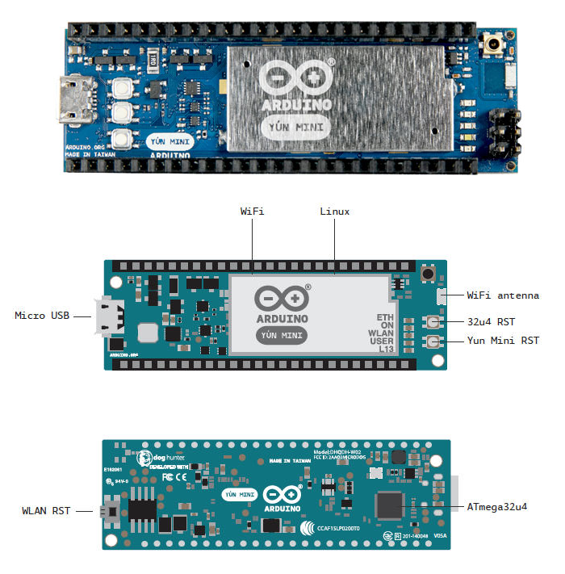
รูป: Arduino Yún Mini (Source: Arduino.cc)
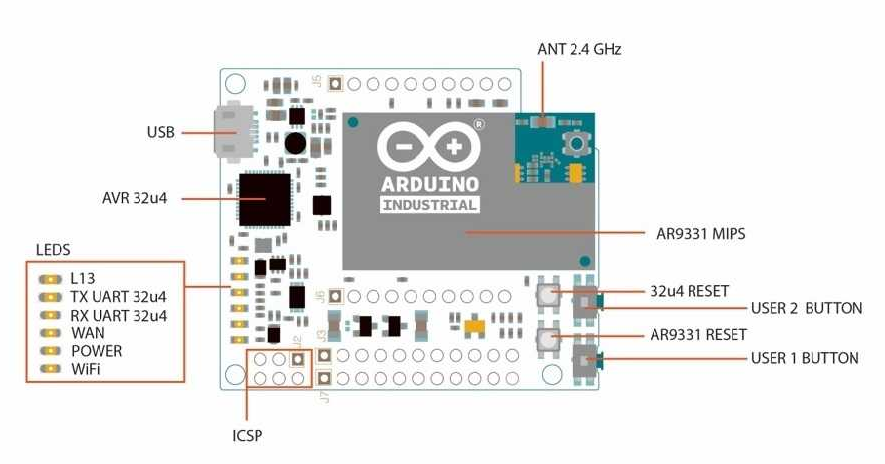
รูป: Arduino Industrial 101 (Source: Arduino.cc)
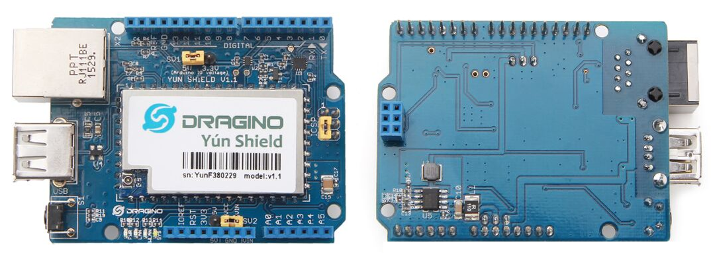
รูป: Dragino Shield (v1.x / v2.x) เป็น Arduino Shield ที่มีลักษณะเหมือนกับ Arduino Yún Shield
บอร์ด Arduino ที่รองรับการใช้งาน Linux นอกเหนือจาก Arduino Yun แล้ว ยังมีบอร์ด เช่น Arduini Tian และ Arduino TRE แต่ในปัจจุบัน ได้เลิกการผลิตไปแล้วเช่นกัน
Arduino TRE SBC Developer Edition
- Release Date: Oct. 2013
- MPU: TI Sitara AM3359AZCZ100 SoC (ARM Cortex-A8, 1GHz)
- MCU: ATmega32u4
- RAM: 512MB (DDR3L)
- Storage: MicroSD slot
- Connectivity: Ethernet 10/100
- OS: Debian
- Doc: https://docs.arduino.cc/retired/boards/arduino-tre
Arduino Tian
- Release Date: Jan. 2016
- MPU: Qualcomm Atheros AR9342 (560MHz)
- MCU: Atmel ATSAMD21G18 (32-bit ARM Cortex M0+ core)
- RAM/Flash/eMMC: 64MB (DDR2)/ 16MB/ 4GB
- Connectivity: IEEE 802.3 (10/100/1000), 802.11 b/g/n 2.4GHz
- OS: OpenWRT-based (GNU/Linux) OS
- Doc: https://docs.arduino.cc/retired/boards/arduino-tian
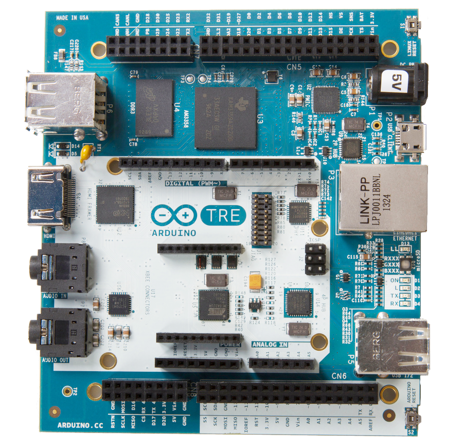
รูป: บอร์ด Arduino TRE
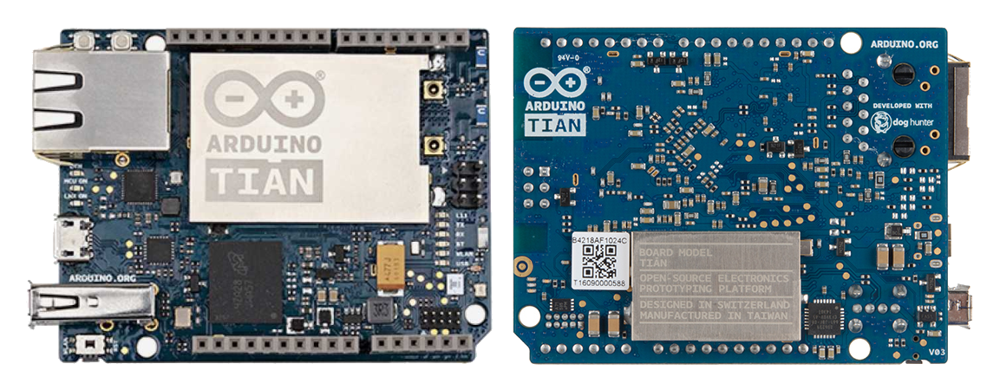
รูป: บอร์ด Arduino TIAN
▷ Seeed Studio LinkIt Smart 7688 Duo#
บอร์ด LinkIt Smart 7688 Duo เป็นบอร์ดที่ใช้ชิป MediaTek MT7688 (MIPS 24KEc) เป็นตัวประมวลผลหลัก และมีชิป ATmega32U4 ดังนั้นจึงถือว่าจัดอยู่ในกลุ่มเดียวกับ Arduino Yun แต่มีขนาดของหน่วยความจำ DDR2 RAM และ Flash มากกว่า
- Release Date: December 2015
- MPU: MediaTek MT7688AN (MIPS24KEc, 580MHz, 3.3V)
- MCU: ATmega32U4 (3.3V, 8MHz)
- RAM/Flash: 128MB (DDR2) / 32MB (MX25L25735F)
- Status: Retired
- Doc: https://wiki.seeedstudio.com/LinkIt_Smart_7688_Duo/
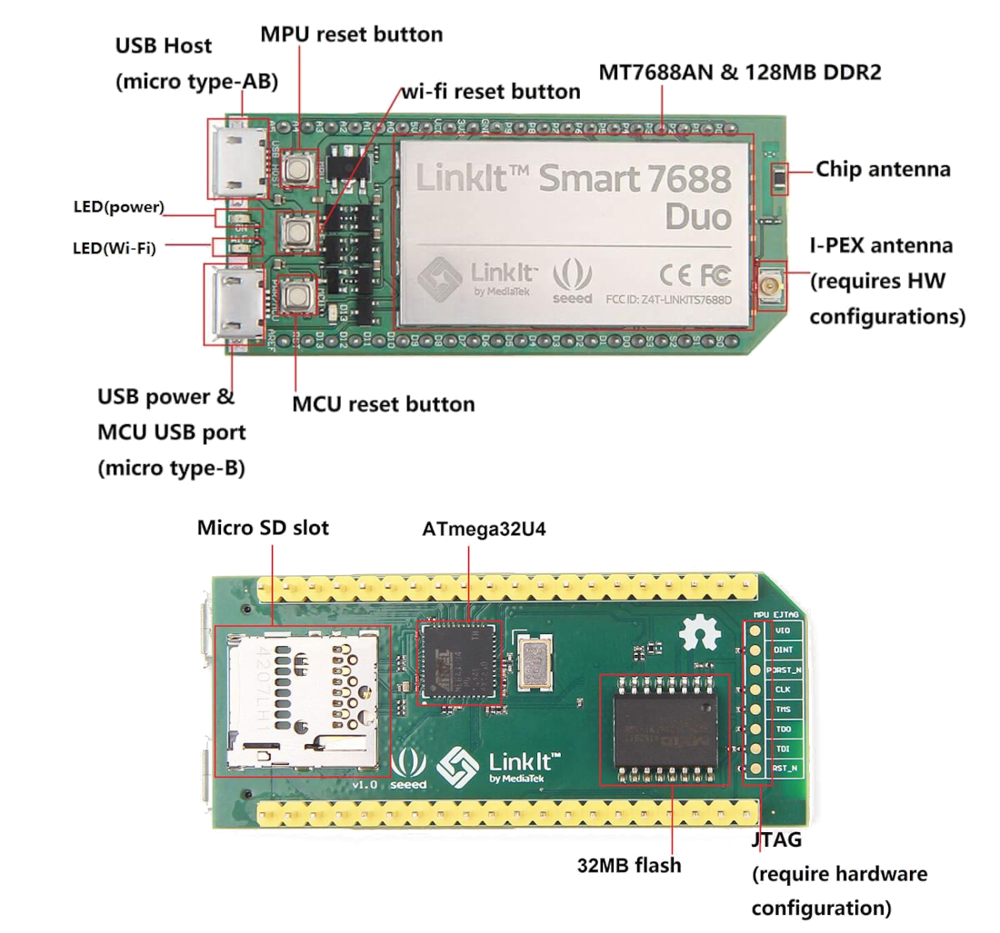
รูป: บอร์ด Linkit Smart 7688 Duo
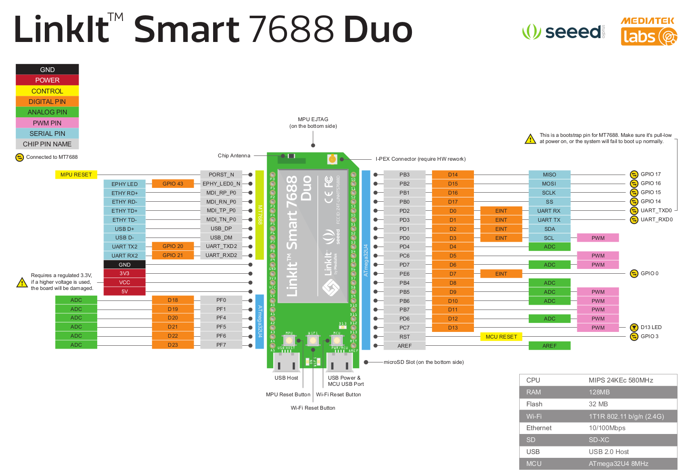
รูป: Linkit Smart 7688 Duo - Pinout
▷ Arduino Portenta X8#
บอร์ด Arduino Portenta X8 เป็นบอร์ดไมโครคอนโทรลเลอร์ หรืออาจเรียกว่า คอมพิวเตอร์บอร์ดเดี่ยว (SBC) ที่มีราคาสูงกว่าบอร์ดอื่น ๆ ของ Arduino Pro Series
- MPU: ชิป NXP i.MX 8M Mini MPU (Quad-core ARM Cortex-A53 @1.8GHz + ARM Cortex-M4 @400MHz)
- MCU: ชิป STM32H747XI MCU (ARM Cortex-M7 @480MHz + Cortex-M4 @240MHz, 2MB Flash, 1MB SRAM) เขียนโปรแกรมด้วย Arm Mbed OS
- RAM: หน่วยความจำหลัก DDR4 DRAM (2GB) และ eMMC Storage (16GB)
- Connectivity: โมดูล Murata Type 1DX (Infineon/Cypress CYW4343W SoC) รองรับการสื่อสารไร้สาย WiFi 802.11b/g/n & Bluetooth 5.1
- OS: รองรับการใช้งานร่วมกับ Linux Distribution (Yocto)
- Doc: https://docs.arduino.cc/hardware/portenta-x8
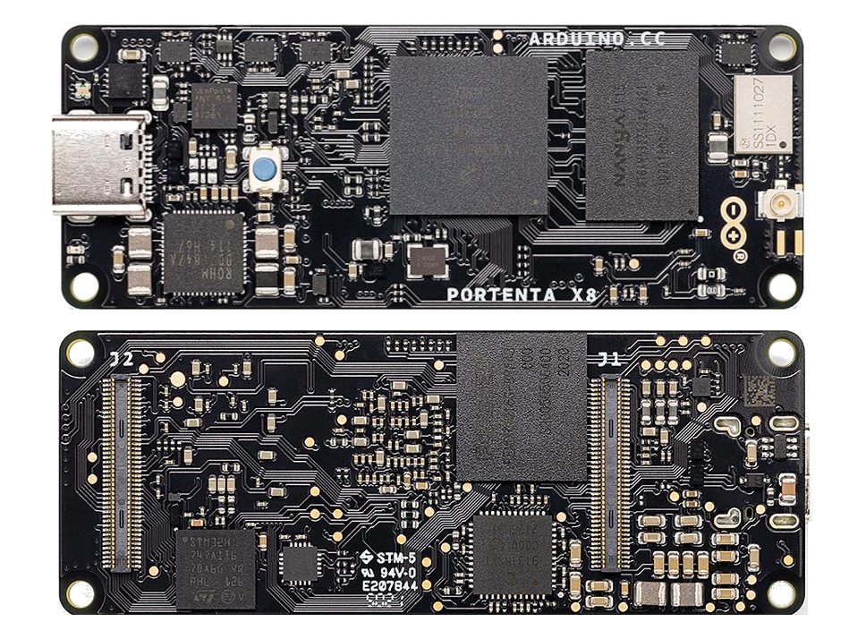
รูป: Arduino Portenta X8
▷ UDOO#
UDOO เป็นบอร์ดคอมพิวเตอร์ขนาดเล็กที่มีไมโครคอนโทรลเลอร์และเขียนโปรแกรม ด้วย Arduino ได้ มีบริษัทในประเทศอิตาลีเป็นผู้พัฒนา เริ่มต้นด้วยบอร์ดแรกซึ่งผ่านการระดมทุนใน KickStarter และในปัจจุบันก็มีออกมาหลายรุ่นให้เลือกใช้งาน แบ่งออกเป็นกลุ่มตามสถาปัตยกรรมของชิปที่ได้เลือกมาใช้งาน คือ Intel Atom / Celeron / Pentium (x86_64), AMD Ryzen และ NXP SoC (Arm Cortex-A)
- UDOO DUAL / QUAD
- UDOO Neo: BASIC / EXTENDED / FULL
- UDOO x86 Ultra
- UDOO BOLT V3 / V8
นอกจากความแตกต่างในการเลือกใช้ชิป MPU แล้วซึ่งมีราคาและความสามารถในการประมวลผลที่แตกต่างกัน บอร์ด SBC ของ UDOO มีชิปไมโครคอนโทรลเลอร์ ATmega32u4 (8-bit AVR) อยู่บนบอร์ด ยกเว้นกรณีที่ใช้ชิป Freescale / NXP i.MX 6SoloX ของบอร์ด UDOO Neo ที่มี (32-bit) Arm Cortex-M4 อยู่ภายในแล้ว
UDOO DUAL / QUAD
- Release Year: 2013
- MPU: Freescale / NXP i.MX6 ARM Cortex-A9 32-bit Dual-core / Quad-core, 1GHz
- MCU: Atmel SAM3X8E ARM Cortex-M3 MCU (Arduino DUE compatible, 3.3V logic)
- RAM: 1GB (DDR3)
- Storage: micro SD / SATA SSD (+5V supply)
- OS: UDOOBuntu (Ubuntu-based) / Android OS / Armbian OS
- Doc: https://www.udoo.org/docs/Introduction/Introduction.html
- Design files: https://www.udoo.org/docs/Hardware_Accessories/Resources.html
- Status: End-of-Life
บอร์ด UDOO QUAD (Schematic) มีส่วนเชื่อมต่อกับวงจรภายนอกในรูปแบบ GPIO Pin Headers แบ่งเป็นกลุ่มสำหรับชิป SAM32X8E และชิป i.MX6 และใช้กับแรงดันไฟเลี้ยง 3.3V เท่านั้น
การเขียนโปรแกรม Arduino สำหรับชิป SAM3X8E
สามารถทำได้จากภายใน เช่น ถ้าใช้ UDOOBuntu จะมองเห็นชื่ออุปกรณ์ /dev/ttymxc3
เป็น Serial Port และใช้สำหรับการอัปโหลดเฟิร์มแวร์
UDOO Neo: BASIC / EXTENDED / FULL
- Release Date: March 2015
- SoC: Freescale / NXP i.MX 6SoloX
- MPU: Dual-core 32-bit Cortex-A9 processor (1GHz)
- MCU: Arm Cortex-M4, 200MHz (Arduino Programmable)
- RAM: 512MB / 1GB (DDR3)
- Doc: https://www.udoo.org/docs-neo/Introduction/Introduction.html
- Status: End-of-Life
UDOO x86 Ultra
- Release Date: March 2017
- MPU: Intel Quad-Core 64-bit
- Intel Atom x5-E8000 @1.04GHz
- Intel Celeron N3160 @1.6GHz
- Intel Pentium N3710 @1.6GHz
- MCU: Intel Curie module (Arduino 101 compatible)
- RAM: 2GB / 4GB / 8GB (DDR3L)
- Doc: https://www.udoo.org/docs-x86/Introduction/Introduction.html
UDOO x86 II ADVANCED PLUS / ADVANCED PLUS ULTRA
- Release Date: March 2017
- MPU: Intel Quad-Core 64-bit
- ADVANCED PLUS: Intel Celeron N3160 @1.6GHz
- ADVANCED PLUS ULTRA: Intel Pentium N3710 @1.6GHz
- MCU: ATmega32U4 (Arduino Programmable)
- RAM: 4GB / 8GB (DDR3L)
- Doc: https://www.udoo.org/docs-x86II/Introduction/Introduction.html
UDOO BOLT V3 / V8
- Release Date: April 2019
- MPU: AMD Ryzen Embedded V1000 SoC
- V3: V1202B (up to 3.2GHz) - V8: V1605B (up to 3.6GHz)
- MCU: ATmega32U4 (Arduino Leonardo compatible)
- Doc: https://www.udoo.org/docs-bolt/Introduction/Introduction.html
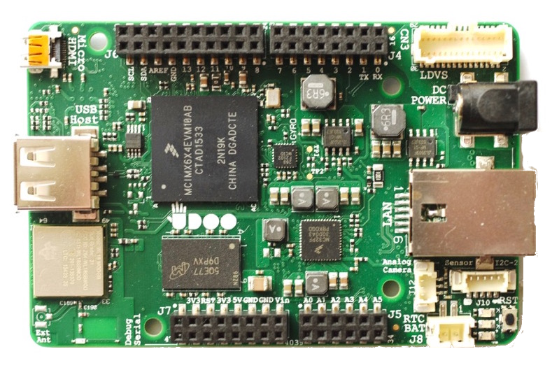
รูป: UDOO Neo
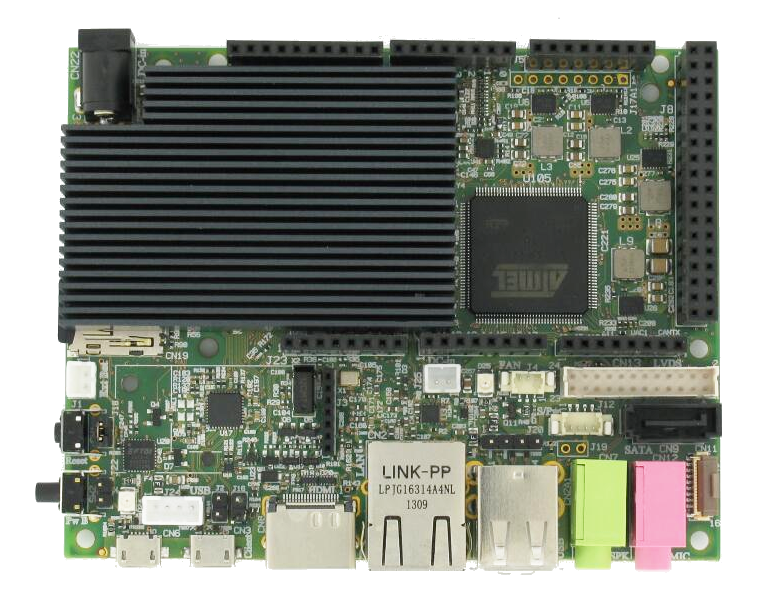
รูป: UDOO QUAD
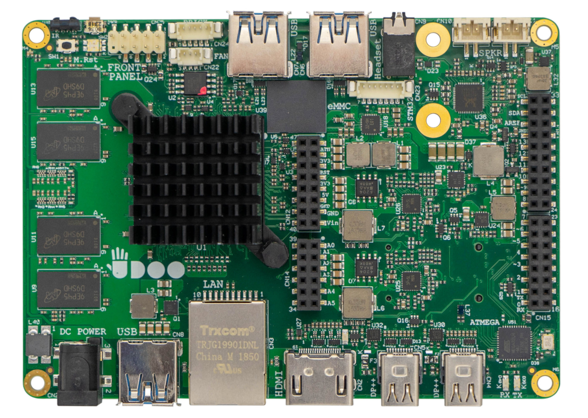
รูป: UDOO x86 II Advanced Plus
▷ LattePanda#
บอร์ด SBC ของ LattePanda มีชิปของ Intel ที่ใช้งานร่วมกับ ระบบปฏิบัติการ Windows ได้ และมีชิปไมโครคอนโทรลเลอร์ ATmega32U4 (เหมือนกรณีของบอร์ด UDOO) สำหรับเขียนโปรแกรมด้วย Arduino
ปัจจุบันมีบอร์ด SBC ของ LattePanda ออกมาหลายรุ่นให้เลือกใช้งาน และมีการเลือกใช้ตัวประมวลผลที่มีความสามารถสูงขึ้นกว่าเดิมซึ่งทำให้มีราคาของบอร์ดเพิ่มสูงขึ้นตาม
- LattePanda V1
- LattePanda 2 Alpha
- LattePanda 2 Delta
- LattePanda 3 Delta
LattePanda V1: https://www.lattepanda.com/lattepanda-v1
- MPU: Intel Atom Cherry Trail x5-Z8350, 64-bit, Quad-core
- MCU: ATmega32u4
- RAM (LPDDR3) / eMMC: 2GB/32GB, 4GB/64GB
- Power Supply: 5V / 2A
- OS: Windows 10 Home Edition, Windows 10 Enterprise
LattePanda 2 Alpha: https://www.lattepanda.com/lattepanda-alpha
- MPU: Intel Core M3-8100Y, Dual-Core 64-bit, 1.1GHz ~ 3.4GHz
- MCU: ATmega32u4
- RAM (LPDDR3) / eMMC: 8GB/- (Alpha 800s), 8GB/64GB (Alpha 864s)
- OS: Windows 10 Pro
LattePanda 2 Delta
- MPU: Intel Celeron N4100, Quad-Core 64-bit, 1.1-2.4GHz
- MCU: ATmega32u4
- RAM (LPDDR4) / eMMC: 4GB/32GB (Delta 432)
- OS: Windows 10 Pro
LattePanda 3 Delta (864): https://www.lattepanda.com/lattepanda-3-delta
- MPU: Intel Celeron N5105, Quad-Core 64-bit, 2.0GHz ~ 2.9GHz
- MCU: ATmega32u4
- RAM (LPDDR4) / eMMC: 8GB / 64GB
- OS: Windows 10 Pro; Windows 10 IoT Enterprise
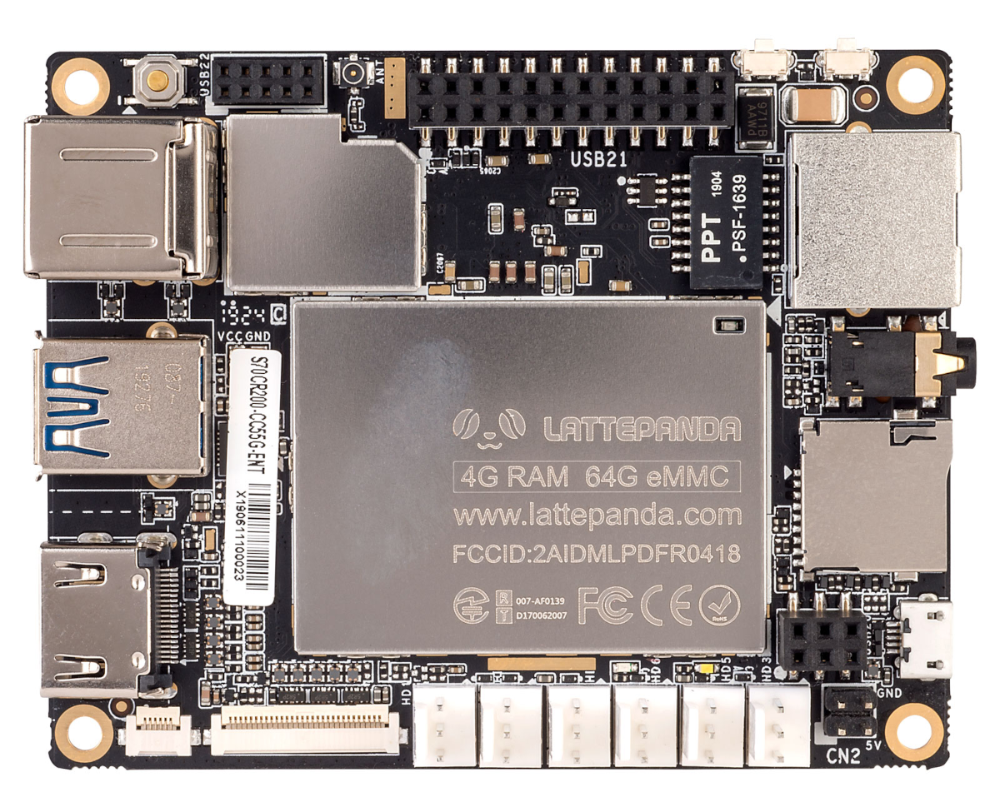
รูป: มุมมองด้านบนของบอร์ด LattePanda V1 (Pinout)
{kind=link}
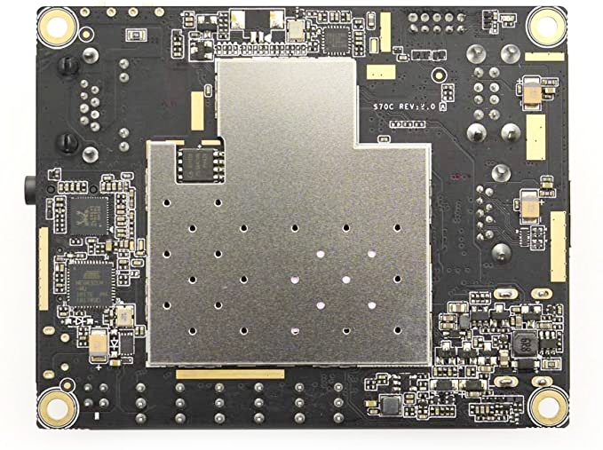
รูป: มุมมองด้านหลังของบอร์ด LattePanda V1 แสดงให้เห็นชิป ATmega32u4 และชิป Realtek RTL8152B สำหรับ Ethernet Chipset
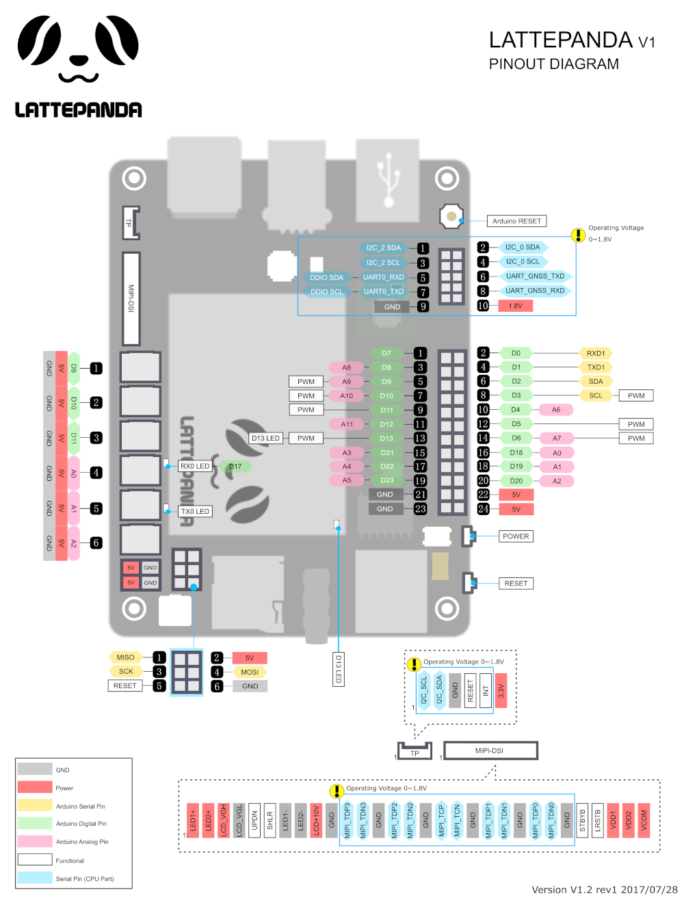
รูป: LattePanda V1 Pinout
แผนผัง Pinout Map ของบอร์ด LattePanda V1 แสดงตำแหน่งของขาต่าง ๆ เช่น มีการแบ่งกลุ่มของขา I/O ที่มีสัญญาณเชื่อมต่อกับชิป ATmega32U4 (5V) แต่ก็มีบางกลุ่มเป็นสัญญาณมาจากชิป Intel เช่น Serial I/O (UART และ I2C) ซึ่งทำงานด้วยระดับแรงดันสำหรับลอจิก 1.8V (ดังนั้นจึงไม่สามารถนำไปเชื่อมต่อโดยตรงกับวงจรที่ใช้ 3.3V หรือ 5V)

รูป: บอร์ด LattePanda 3 Delta
▷ กล่าวสรุป#
บทความนี้ได้นำเสนอตัวอย่างคอมพิวเตอร์บอร์ดเดี่ยว (Single-Board Computers: SBCs) ที่มีชิปไมโครคอนโทรลเลอร์รวมอยู่ด้วย และสามารถเขียนโปรแกรมเชื่อมต่อกับวงจรภายนอกได้โดยใช้ซอฟต์แวร์ Arduino
This work is licensed under a Creative Commons Attribution-ShareAlike 4.0 International License.
Created: 2023-05-15 | Last Updated: 2023-05-17